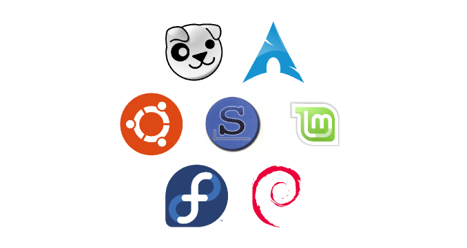

Intro to Linux
Table of contents
- Flavours of Linux
- Why use KDE Neon
- Difference between Windows and Linux
- Installing software
- Classical methods
- Newer app package formats
- Recommended methods
- Tools
- Microsoft Edge
- Microsoft Visual studio Code
- Telegram Desktop
Flavours of Linux
| Base |
Derivatives |
Package manager |
| RHEL |
Fedora, CentOS |
RPM |
| Debian |
Ubuntu |
APT |
| Arch |
Manjaro, Chakra |
Pacman |

Why use KDE Neon?
- Used KDE Desktop and based on Ubuntu LTS
- Stable, reliable and performant (uses less memory)
- Feels familiar for peple transitioning from Windows OS
Difference between Windows and Linux
Try to understand the basic difference between Windows and Linux in terms of,
- Filesystem
Learn about the different folder within root (usr, bin, var, etc and so on)
- User permissions
Learn about the different file permissions - read, write and execute.Learn about chmod and
chowncommands
- Executables
Learn about opening vs executing files.
Installing software
Classical methods
- APT package manager
- Discover software center (App store)
- Downloaded .DEB files
Newer app package formats
- Flatpak
- Snap
- AppImage
Recommended methods
We atrongly recommend .DEB files and APT package manager for beginners as all other methods
can bloat the operating system and cause performance issues.
Tools
Instakk the following software,
Microsoft Edge
Learn about browser engines.
Learn about market share of different browsers.
Try to reason out why Microsoft Edge is better replacement for Googlr chrome
Download
Microsoft Visual studio Code
Code editor or IDE
Download
Telegram Desktop
Communication tool
Download